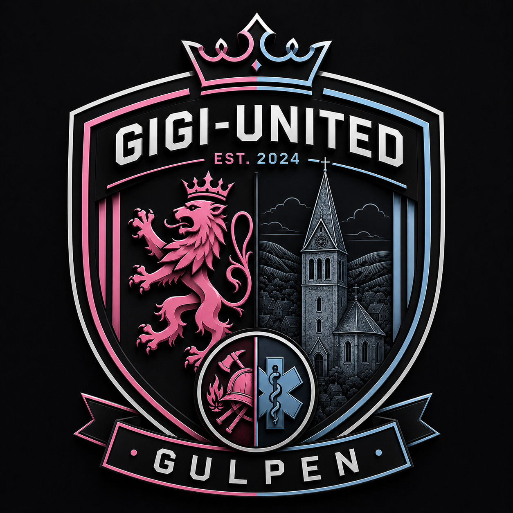
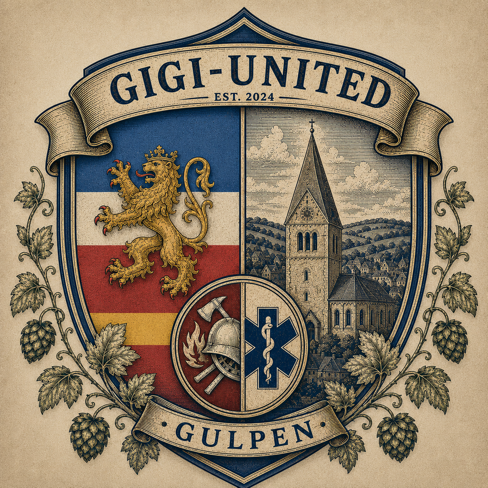

Gigi-United
VS
?
Tegenstander
Blue Rox Stadium · Gulpen

De trots van Gulpen
Passie op het veld. Verbonden met Gulpen. Vanuit het Blue Rox Stadium bouwen we sinds 2024 aan onze eigen voetbalgeschiedenis.
Wedstrijddag
Blue Rox Stadium · Gulpen
Gigi Gazette

Onze identiteit
Gigi-United werd opgericht in 2024 en draagt Gulpen zichtbaar mee. Het moderne logo staat voor de huidige clubidentiteit; het historische wapen vertelt waar de club vandaan komt.
Onze thuisbasis
Plaats voor 12.000 supporters en het kloppende hart van Gigi-United. Binnenkort krijgt deze pagina tribunes, historie, sfeerbeelden en stadionrecords.